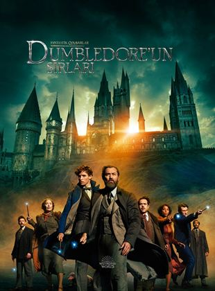
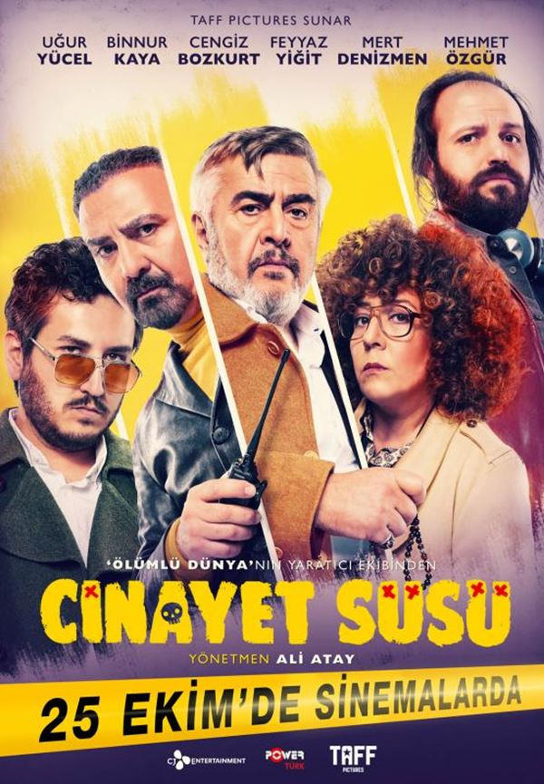
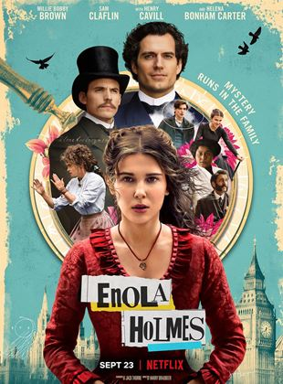

Æon Flux

Bilim Kurgu |5,4| 2005
Günümüzden 500 yıl sonra, hizla yayılan bir virüs dünya üzerindeki birçok insanin ölümüne neden olur. Insanlar koloniler kurarak, virüsten korunmaya çalisir. Ailesinin.. Daha Fazla Göster..Blonde

Biyografi |5,5| 2022
Blonde, Andrew Dominik tarafından yazılıp yönetilen Amerikan biyografik drama filmi. Aktris Marilyn Monroe'nun hayatından uyarlanan filmde Ana de Armas.. Daha Fazla Göster..The Batman

Aksiyon |7,8| 2022
Batman,suçla mücadelesinin ikinci yılında,Gotham City’de kendi ailesine bağlanan yolsuzluğu ortaya çıkarırken,Riddler adıyla bilinen bir seri katil tehditi ile karşı.. Daha Fazla Göster..Fantastic Beasts: The Secrets of Dumbledore
Fantastik |6,2| 2022
Profesör Albus Dumbledore, güçlü Karanlık büyücü Gellert Grindelwald’ın, büyücülük dünyasını kontrol etmek için harekete geçtiğini bilmektedir. Tek başına onu.. Daha Fazla Göster..Afterlife of the Party

Komedi |5,8| 2021
Hayatı partilerden ibaret olan Cassie tuhaf bir kazada ölür. Ancak gökteki büyük partiye gidebilmek için önce Dünya’daki hatalarını telafi etmelidir. Daha Fazla Göster..Cinayet Süsü
Komedi |6,7| 2019
Cinayet Süsü, gizemli bir seri katil vakasını çözmeye çalışan cinayet büro ekibinin maceralarını konu ediyor.Cinayet Büro ekibi ilginç bir vaka ile karşı karşıyadır. Daha Fazla Göster..Enola Holmes
Gizem |6,6| 2020
Nancy Springer'ın aynı adlı kitap serisine dayanan yakın zamanda yayınlanan bir gizem filmidir. Filmin yönetmeni Harry Bradbeer ve yazarı Jack Thorne'dur. Daha Fazla Göster..The Witcher: Nightmare of the Wolf